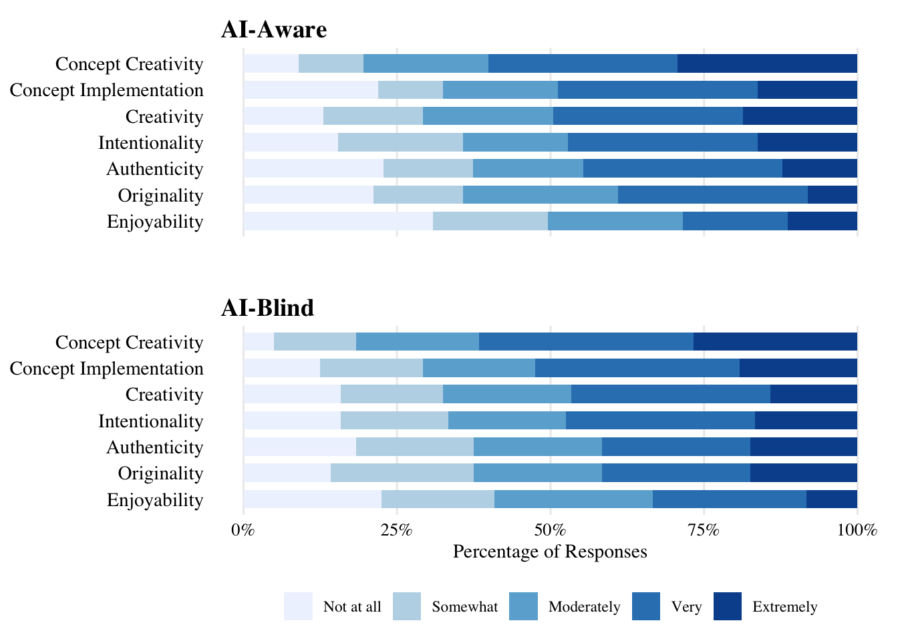
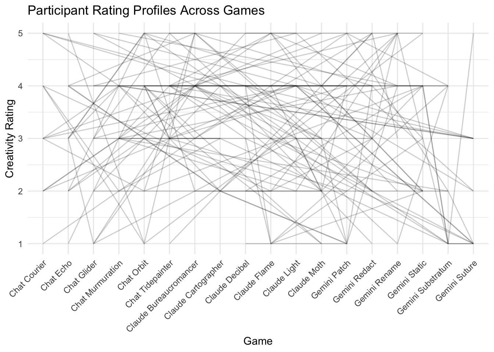
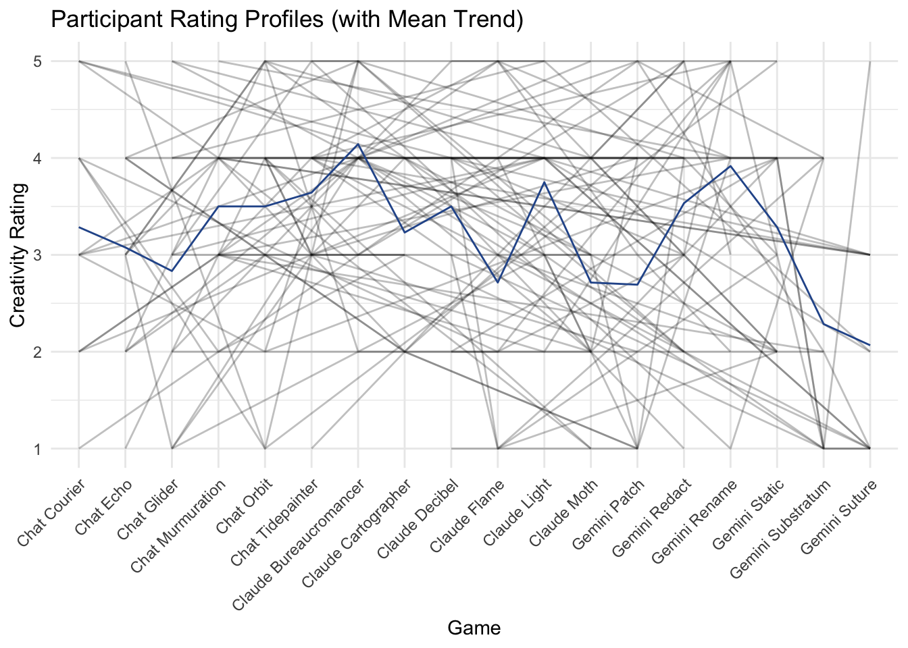
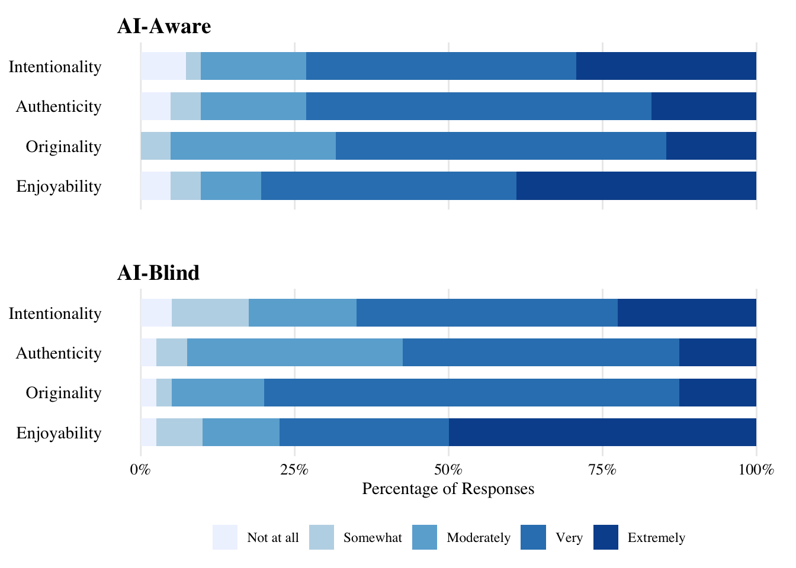
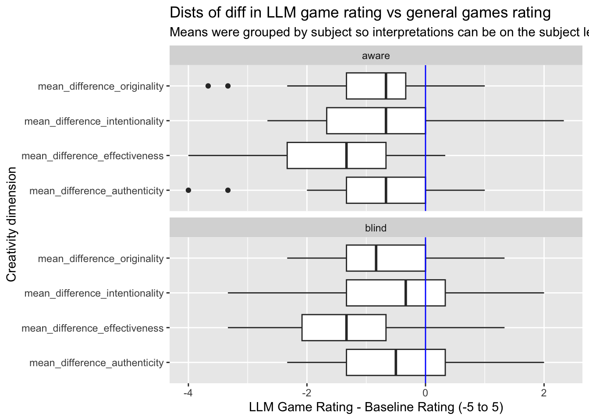

Thesis data analysis
This document is the data analysis source code for my pre-registered study, Are Large Language Models Creative?
Pre-registration can be found at https://osf.io/hw2en/overview.
This code does not retrieve participant data directly from OSF. The data must be downloaded from the Github repository in which this analysis file is found. They are in the folder osfstorage-archive.
Some other files also must be downloaded from the Github repository in which this analysis file is found. These files are in the folder data. Included in these files are the coded qualitative data files. I coded for themes in Google Sheets and then analyzed the overarching trends in this document.
Data wrangling & basic sample stats
Emergency exits
More data wrangling & basic quantitative stats
Inter-judge reliability (ICC)
Likert creativity and related dimensions

Spaghetti Plot


EDA correlations
Qual creativity
Baseline adjusted linear mixed-models
Table all LMM results
AI-Aware
|
AI-Blind
|
||||
|---|---|---|---|---|---|
| Dimension | Model | M [95% CI] | M [95% CI] | t-test | p |
| Originality | Observed | 2.9 [2.61, 3.2] | 3.08 [2.78, 3.38] | t(74.81) = -1.03 | .306 |
| Adjusted | 2.91 [2.62, 3.21] | 3.07 [2.78, 3.37] | t(73.56) = -0.96 | .340 | |
| Effectiveness | Observed | 2.59 [2.27, 2.91] | 2.79 [2.46, 3.11] | t(75.2) = -1.06 | .292 |
| Adjusted | 2.6 [2.28, 2.92] | 2.78 [2.46, 3.09] | t(73.92) = -0.97 | .334 | |
| Authenticity | Observed | 2.97 [2.66, 3.28] | 3.04 [2.72, 3.35] | t(75.38) = -0.37 | .715 |
| Adjusted | 2.94 [2.64, 3.25] | 3.07 [2.76, 3.37] | t(74) = -0.69 | .495 | |
| Intentionality | Observed | 3.12 [2.83, 3.42] | 3.16 [2.86, 3.45] | t(75.54) = -0.18 | .855 |
| Adjusted | 3.1 [2.81, 3.38] | 3.18 [2.89, 3.47] | t(74.44) = -0.46 | .645 | |
Likert baseline

